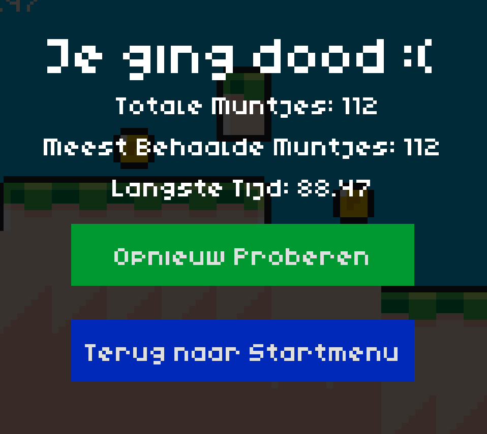
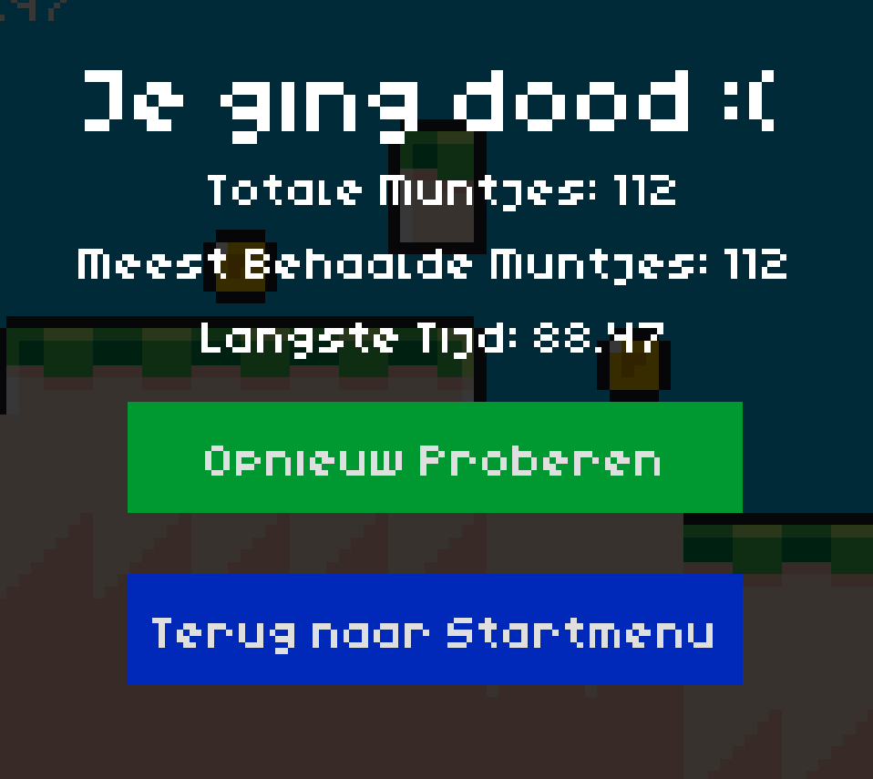
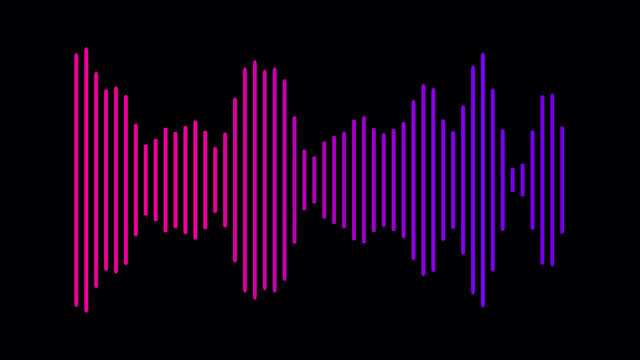
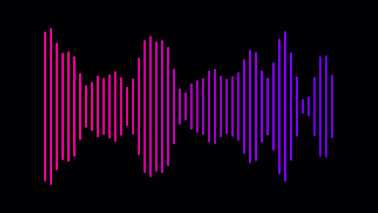
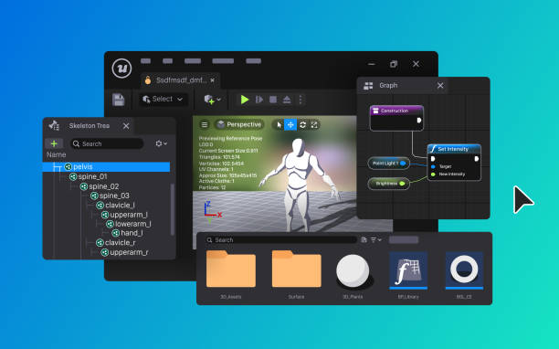
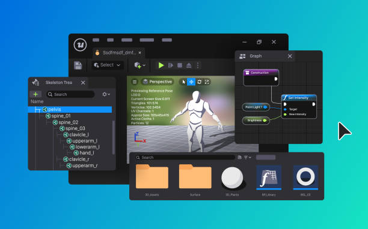

Er zijn veel verschillende manieren om zoiets te doen, dus deze deelvraag gaat geen specifieke informatiebronnen bevatten.
Deze deelvraag bevat wel links naar de specifieke tech die wij hebben gebruikt voor ons spel.
Het Idee/Concept
Het aller eerste dat je moet doen wanneer je begint met het ontwikkelen van een spel is een idee of concept vastleggen.
We hebben dus met het hele groepje besproken wat voor een spel we wilden maken voor ons praktijkonderzoek.
We hebben gekeken naar spellen die we zelf leuk vonden, en zijn uiteindelijk samen op het idee gekomen van een endless runner game, een spel waarin je oneindig door kunt rennen.
Voorbeelden van een spelllen in dit genre is Subway Surfers en Templerun.
Verslavende Elementen
Om het spel zo verslavend mogelijk te maken hebben we onderzoek gedaan naar de verslavende elementen van veel bestaande verslavende games.
Voornamelijk games ontwikkelt voor telefoon.
Een paar spellen waar we naar keken waren bijvoorbeeld Subway Surfers en Angry Birds.
Hieruit hebben we een lijstje verslavende elementen gemaakt, en toen we ons eigen spel ontwikkelden lag de focus op zoveel mogelijk verslavende elementen aan het spel toevoegen.
Een aantal elementen die we uit ons onderzoek hebben gehaald die je in ons spel terug kan vinden zijn:
• Muntjes om te verzamelen
• Een winkel met upgrades die je kunt kopen met de Muntjes uit het spel
• Een timer die je langste tijd bijhoudt
• Elke keer een andere ervaring leveren om het spel vers te houden
• Een verkrijgbaar 2de karakter om de spelervaring te vernieuwen
Ons Spel
Ons spel kan je terugvinden op de volgdende Link waar we het spel hebben geüpload.
Een spel, of game bestaat uit een aantal verschillende onderdelen die samenwerken om een geheel product te vormen. De afbeeldingen waaruit het spel bestaat, de geluiden in het spel, de code die het spel tot werking brengt en veel andere dingen die het ontwerp van het spel bepalen, zoals de kaart waar de speler op speelt.
In deze deelvraag gaan we deze verschillende aspecten van een spel maken kort behandelen, en vertellen we over welke programmas en technieken wij hebben gebruikt voor ons spel.

 



Voor de visuele aspecten van ons spel hebben we het figuurtje en een aantal van de stukken grond uit een spel genaamd Roper gebruikt.
Geen van onze groepsleden zijn kunstenaar, dus dit was voor ons het makkelijkst.
Zie de bronnenlijst onderin voor de link naar hun website.
Geluid
Het spel bevat geen muziek, maar wel geluidseffecten zoals wanneer de speler een slide doet of springt.
Deze geluidseffecten zijn gegenereerd met een gratis tool die random geluiden oplevert voor gebruik in spellen. Dit programma heet BFXR.
Zie de bronnenlijst onderin voor de link naar hun website.
Code en Design
Het programmeren van het spel én het samenvoegen van de verschillende onderdelen van losse afbeeldingen en geluiden tot een spel is gedaan met de Game Engine Godot. Zie de bronnenlijst onderin voor de link naar hun website.
Een Game Engine is een programma dat een aantal game relateerde dingen voor je regelt, zoals het registreren wanneer een gebruiker op de Spatiebalk drukt om te springen.
Alle code/logica van het spel hebben we zelf geschreven, inclusief een systeem dat het spel elke keer anders laat zijn.
Dit systeem zorgt ervoor dat je elke keer dat je speelt een andere ervaring hebt, en het spel verslavender wordt.
 

 
